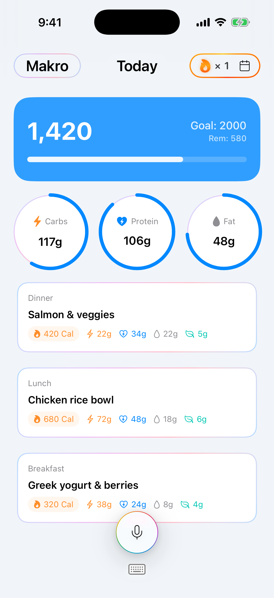

Solutions for the small pains in life.
A wobbling table does not need a new table. It needs something small under the short leg. digdig is a home for fixes like that.

GetMakro
Tracking regularly beats tracking perfectly.
GetMakro is a food log you can actually keep. Say what you ate, or type it. Calories, macros, and fiber land on the day, against a goal you set. The month matters more than a perfect plate.
Line
The ID you copied should open itself.
Line watches the clipboard. Copy a ticket, a pull request, or a customer ID, then press the key you set for that app. The browser opens the URL with the ID filled in.